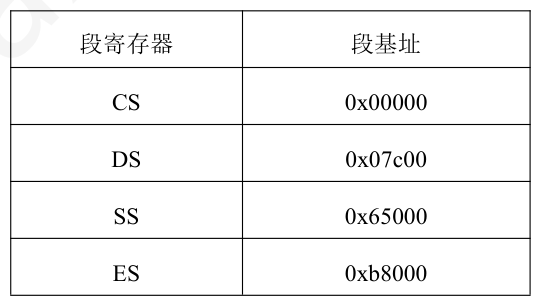
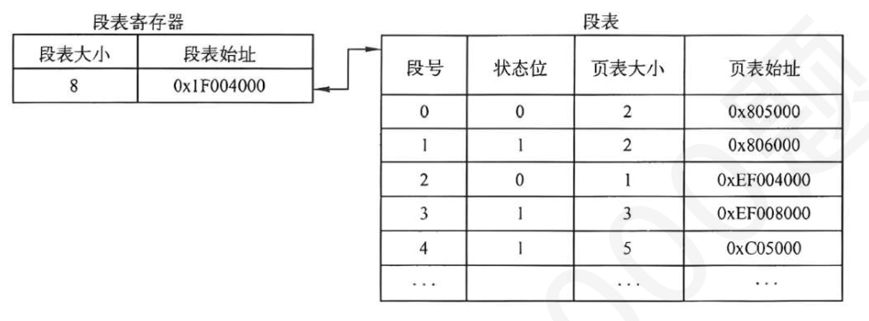
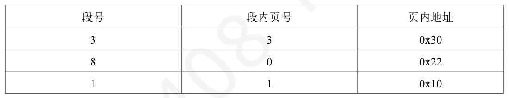
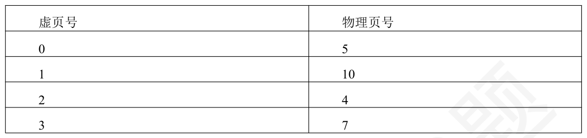
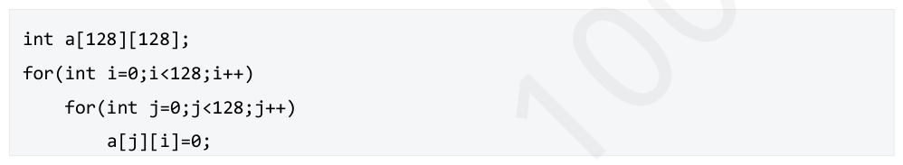
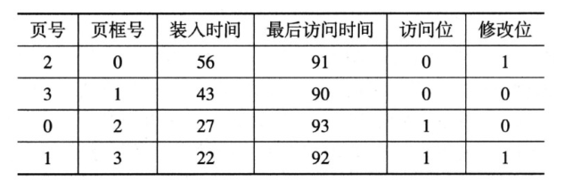

第 31 题
下列关于分段存储管理系统数据共享相关概念的叙述中，错误的是（ ）
A． 共享代码段（如公共库函数）通常是可重入代码（纯代码），在执行过程中不会被修改，因此多个进程可以同时安全地执行它。 B． 当多个进程共享一个数据段时，为了保证数据的一致性，操作系统通常需要提供同步互斥机制，如信号量或管程。 C． 系统为所有共享段建立一个共享段表，其中记录了每个共享段的物理位置、长度以及当前共享该段的进程数量（共享计数）。 D． 为了实现共享，共享段在不同进程的段表中所对应的段号必须相同，但段内地址可以不同。 答案与解析 答案：D
A 正确，可重入代码（纯代码）的一个重要特性是其在执行期间自身不发生改变，任何可能改变的部分（如局部变量、返回地址）都存储在每个进程私有的栈空间或其他私有数据区。这使得多个进程可以同时执行同一份代码副本而不会相互干扰，是实现代码段共享的基础。 B 正确，如果多个进程共享一个可读写的数据段，那么它们对该数据段的并发访问可能会导致数据不一致的问题（例如，竞争条件）。因此，操作系统需要提供同步互斥机制（如信号量、互斥锁、管程等），让进程能够协调对共享数据的访问，以保证数据完整性和一致性。 C 正确，为了有效管理共享段，操作系统通常会维护一个系统级的共享段表。该表记录了每个共享段的物理信息（如在内存中的起始地址、段的长度）以及一个共享计数（或链接计数），用于表示当前有多少个进程正在共享该段。当共享计数为0 时，该段所占用的内存才能被回收。 D 错误，在分段存储管理中，每个进程拥有自己独立的段表，段号是进程逻辑地址空间的一部分。当多个进程共享同一个物理段时，这个共享段在它们各自的段表中所对应的段号可以是不同的。例如，进程A 可能将共享库段映射为其3 号段，而进程B 可能将其映射为其5 号段。重要的是它们段表中的相应表项都指向物理内存中同一个共享段的起始地址和具有相同的段长。段内地址（偏移量）是相对于段起始而言的，对于同一个共享段内的同一逻辑位置，其段内地址是相同的。
教材第 150 页 第 32 题
下列关于分页和分段的描述中，正确的是（ ）
A． 分页系统中，页面在物理内存中只能从页面大小的整数倍地址开始存放 B． 页是信息的物理单位，页长由用户决定 C． 分段主要目的是提高主存利用率 D． 段是信息的逻辑单位，段长由系统决定 答案与解析 答案：A
分页系统的核心是将虚拟内容空间和物理内存交国均划分为大小相同的页面，并以页面作为内存空间的最小分配单位，因此选项A 正确。页是信息的物理单位，页长由系统决定，因此选项B 错误。分段是为了方便用户编程以及方便共享，因此选项C 请误。段是信息的逻单位，段长由用户决定，因此选项D 错误。
教材第 150 页 第 33 题
对于采用分段式存储管理方式的计算机系统来说，以下相关描述中正确的是（ ）
A． 程序分段对装入程序是可见的，程序如何分段在装入时决定 B． 程序分段对用户是可见的，程序如何分段在用户编程时决定 C． 程序分段对操作系统是可见的，程序如何分段在分配内存时决定 D． 程序分段对操作系统是可见的，程序如何分段在程序运行时决定 答案与解析 答案：B
程序分段对用户和操作系统都可见，但其分段多在用户编程时决定。
教材第 150 页 第 34 题
某计算机系统采用分段方式管理内存，段表存储在寄存器中，只存储段基址，不存储段长。某时刻段表内容如下所示：则段内偏移0x1327（段基址在CS 中）和0x1592（段基址在ES 中）对应的物理地址分别为（ ）。

A． 0x01327，0xB9592 B． 0x01327，0x09292 C． 0x66327，0xB9592 D． 0x66327，0x09292 答案与解析 答案：A
前者段基址为0x00000，段内偏移为0x1327，计算得到物理地址为0x01327;后者段基址为0xB8000，段内偏移为0x1592，计算得物理地址为0xB9592。因此选A。
教材第 150 页 第 35 题
段页式存储管理中（ ）
A． 用户的地址空间是分页管理，物理内存是分段管理 B． 用户的地址空间是分段管理，物理内存是分页管理 C． 辅助存储空间是分段管理，物理内存是分页管理 D． 辅助存储空间是分页管理，物理内存是分段管理 答案与解析 答案：B
段页式存储管理结合了页式管理和段式管理的优点，用分段的方法来分配和管理用户地址空间，用分页的方法来管理物理存储空间。故答案为选项B。
教材第 150 页 第 36 题
页式存储管理方式、段式存储管理方式和段页式存储管理方式这三者的虚拟地址空间维度依次是（）。
A． 一维、一维、二维 B． 一维、二维、二维 C． 一维、二维、一维 D． 二维、一维、一维 答案与解析 答案：B
页式存储管理方式中页大小相同，页号和页内偏移量可直接通过逻辑地址计算得出，地址空间是一维的。而分段式和段页式中的段号和段内地址都要显式给出，地址空间是二维的。
教材第 151 页 第 37 题
用户在段页式存储管理方式下运行一个进程段表寄存器和段表如图所示（页面大小为1KB）该用户在调试过程中，设计了3 个地址，试图获取数据，地址如表所示。这三次获取数据的操作 （不考虑TLB），分别访问的内存次数为（ ）


A． 3、3、3 B． 1、0、3 C． 2、1、3 D． 1、2、2 答案与解析 答案：B
在段页式存储系统中，为了获取一条指令或数据，必须三次访问内存，第一次访问内存中的段表，从中取得页表地址；第二次访问内存中的页表，从中取得该页所在的物理块号并将该块号与页内地址一起形成指令或数据的物理地址；第三次访问是根据第二次访问所得的地址，真正取出指令或数据(但这是在访问地址正确的情况下)。为了防止越界，在段页式存储系统中配置了一个段表寄存器，用于存放段表始址和段表长度。在进行地址变换时，首先利用段号，将它与段长进行比较。若段号超出段表长度，则表示越界了。同样的段表中，页表大小这项也是为了预防地址越界的情况。一般情况下，段号、页号都是从0 开始编址，这点从题目所给的图中也可得知。该用户访问的3 个地址中，地址一，段号检查通过，页号越界，3 不在页号0~2 范围内，所以只访问内存1 次。地址二，段号检查未通过，8 不在段号0~7 范围内，越界，所以访问内存0 次。地址三，段号检查通过，且页号也无越界，成功访问到数据，所以访问内存3 次。
教材第 151 页 第 38 题
下列叙述中，正确的有（ ）
A． 仅Ⅰ、Ⅱ B． 仅Ⅱ C． 仅Ⅱ、Ⅲ D． 仅Ⅰ、Ⅳ 答案与解析 答案：B
仅Ⅱ正确。 Ⅰ错误。在页式管理系统中，每个进程都有自己独立的页表。页表用于将进程的逻辑地址空间映射到物理内存地址空间。如果整个操作系统只有一张页表，那么不同进程的相同逻辑地址就会映射到相同的物理地址，无法实现进程地址空间的隔离。 Ⅱ正确。在段式管理系统中，每个进程的逻辑地址空间由若干个段组成，每个段都有其独立的属性 （如基址、长度、权限等）。为了管理这些段并将段的逻辑地址映射到物理地址，操作系统会为每个进程建立一张段表。
教材第 151 页 第 39 题
下列关于虚拟存储器基本特征与实现基础的叙述中，正确的是（ ）
A． 虚拟存储器通过将暂时不用的程序或数据全部保留在内存中，以加快访问速度。 B． 虚拟存储器的实现必须依赖于连续的内存分配方式，以便于进行地址映射。 C． 虚拟存储器在逻辑上扩大了内存容量，其能够提供的总存储容量通常取决于CPU 的寻址能力和外存（如磁盘）的可用空间。 D． 实现虚拟存储器的核心思想是“一次性”和“驻留性”，即程序在运行前需一次性调入内存并常驻。 答案与解析 答案：C
A 错误，虚拟存储器的核心思想之一是“对换性”或“部分驻留”，即只将程序当前需要运行的部分调入内存，暂时不用的部分则存放在外存（如磁盘）中。当需要时再调入，不需要或暂不使用的则可能被换出。这与“全部保留在内存中”相反。 B 错误，虚拟存储器的实现恰恰是建立在离散分配的内存管理方式之上的，如请求分页式或请求段式（或段页式）存储管理。离散分配允许程序的不同部分存放在物理内存中不连续的位置，这为页面的换入换出提供了灵活性。连续分配方式难以支持虚拟存储器的有效实现，因为它要求为整个程序或其已知部分分配连续空间。 C 正确，虚拟存储器的“虚拟性”特征使得用户看到的逻辑地址空间可以远大于实际的物理内存容量。这个逻辑地址空间的大小受限于CPU 的寻址能力（如32 位CPU 理论上可寻址4GB，64 位CPU则大得多）。而这些逻辑地址空间中的内容，一部分在物理内存中，大部分则存放在外存（通常是磁盘的交换区或对换区）上。因此，虚拟存储的总容量可以理解为物理内存和可用外存空间之和，但实际上限更多地由CPU 寻址范围和外存大小决定。 D 错误，这是传统存储管理方式的特征。虚拟存储器的核心思想恰恰是打破了这两个限制，实现了“多次性”（程序不必一次全部调入，可以分多次调入）和“对换性”（程序不必一直常驻内存，可以换入换出）。
教材第 151 页 第 40 题
下列关于进程的虚拟地址空间及其管理的叙述中，（ ）是不正确的。
A． 操作系统为每个进程都分配一个独立的、从0 开始编址的虚拟地址空间，这使得不同进程的相同虚拟地址可以映射到不同的物理地址。 B． 当用户程序调用如malloc（ ）这样的标准库函数请求动态分配内存时，所获得的指针通常指向的是进程虚拟地址空间中的一个地址。 C． 为了实现内存保护，操作系统允许为进程虚拟地址空间中的不同区域（如代码区、数据区）设置不同的访问权限（如只读、可读写）。 D． 一个进程的虚拟地址空间的总大小主要由当前系统中空闲物理内存的大小和磁盘上交换区的大小共同决定。 答案与解析 答案：D
A 正确，虚拟内存管理方式下，每个进程都认为自己拥有一个完整的、独立的地址空间，通常从0 开始编址。即使不同进程使用了相同的虚拟地址，由于它们有各自独立的页表或段表，这些相同的虚拟地址会被映射到物理内存中不同的物理地址，从而实现了进程间的地址隔离。 B 正确，用户程序（包括C 语言程序）在运行时，其所有地址引用（包括通过malloc()等函数动态分配的内存地址）都是虚拟地址。这些虚拟地址由操作系统和硬件（MMU）转换为实际的物理内存地址。 C 正确，存保护是虚拟内存管理的重要功能。操作系统通过在页表项或段表项中设置保护位（如读、写、执行权限位），可以对进程虚拟地址空间中的不同逻辑段或页面施加不同的访问控制。例如，代码段通常设置为只读和可执行，数据段设置为可读写。 D 错误，一个进程的虚拟地址空间的总大小主要由CPU 的寻址能力（即CPU 地址线的位数，如32 位系统理论上最大虚拟地址空间为232字节，64 位系统则更大）决定，而不是直接由当前空闲物理内存或磁盘交换区的大小决定。物理内存和磁盘交换区的大小影响的是一个进程（或多个进程）实际可以使用的、能被有效映射到物理介质上的虚拟内存量，但不是虚拟地址空间本身理论上的最大范围。
教材第 152 页 第 41 题
下列关于虚拟存储管理方式的说法中，正确的是（ ）
A． 仅Ⅰ、Ⅱ B． 仅Ⅰ、Ⅲ C． 仅Ⅰ、Ⅲ、Ⅳ D． Ⅰ、Ⅱ、Ⅲ、Ⅳ 答案与解析 答案：D
Ⅰ正确，虚拟存储器的核心在于允许作业分多次调入内存，并能在内存和外存之间换入换出程序或数据的部分内容。这种机制要求程序不必占用连续的物理内存区域。因此，虚拟存储器的实现必须依赖于离散分配的内存管理方式，如分页式、分段式或段页式存储管理，这些方式允许程序的各个部分独立地映射到物理内存中不连续的块或页框。 Ⅱ正确，程序的局部性原理指出，程序在执行时倾向于在一段时间内集中访问某个局部的地址空间 （时间局部性）和其附近的地址空间（空间局部性）。虚拟存储器正是利用了这一点，只将程序当前活跃的部分（工作集）保留在内存中，而将不常用的部分放在外存，从而在有限的物理内存下支持远大于物理内存的虚拟地址空间。 Ⅲ正确，虚拟存储器为每个进程提供一个逻辑地址空间，这个逻辑地址空间的大小（即虚拟存储器的最大容量）直接受限于CPU 的地址线的位数，即CPU 的寻址能力。 Ⅳ正确，虚拟存储器通过将物理内存作为高速缓存，外存（如磁盘的交换区或页面文件）作为后备存储，来实现在逻辑上扩大内存容量。因此，一个进程（或系统中所有进程）能够使用的虚拟存储的总量，在实际中受限于物理内存的大小以及分配给虚拟存储使用的外存空间大小之和及CPU 寻址能力。
教材第 152 页 第 42 题
已按勘误修正
在缺页异常处理过程中，下列操作中，操作系统不会执行的是（ ）
A． 保存当前程序的现场。 B． 若物理内存已满，则选择一个或多个已在内存中的页面进行置换。 C． 将引发缺页中断的用户进程立即从就绪队列移至阻塞队列。 D． 更新页表以反映新调入页面的物理位置，并修改相关标志位。 答案与解析 答案：C
C 不会执行。引发缺页中断的进程当前正处于运行态（因为它正在执行指令并访问了不在内存的页面）。发生缺页中断后，该进程会从运行态直接进入阻塞态（等待态），以等待所需页面从外存调入内存。它不是从就绪队列移到阻塞队列。
勘误：A 选项已按勘误改为“保存当前程序的现场。”
勘误：勘误确认：修改后答案仍选 C。
教材第 152 页 第 43 题
在支持虚拟内存的操作系统中，交换区（对换区，Swap Space）扮演着重要的角色。下列关于交换区的叙述中，错误的是（）
A． 仅Ⅰ、Ⅱ B． 仅Ⅱ、Ⅲ C． 仅Ⅱ、Ⅳ D． 仅Ⅳ 答案与解析 答案：C
Ⅰ正确，交换区（也称为对换区或页面文件）的主要功能就是作为物理内存的后备存储，当物理内存不足时，操作系统可以将暂时不使用或不活跃的内存页面或整个进程的内容写入到交换区，以便释放物理内存供其他任务使用。 Ⅱ错误，交换区管理的主要目标是提高页面换入换出的速度和效率，而不是像文件系统那样追求灵活的空间利用或支持复杂的目录结构。为了追求速度，交换区的分配策略通常比文件系统简单得多，对对换区的管理应采取连续分配存储管理方式，很少需要考虑外存中的碎片问题，以最大限度地减少磁盘寻道时间和旋转延迟。文件系统通常采用更复杂的离散分配策略（如索引分配、链式分配）和数据结构来管理文件。 Ⅲ正确，这是交换区和虚拟内存机制的核心功能。通过页面换出（将内存页写入交换区）和页面换入（从交换区读回内存页），操作系统可以在有限的物理内存上运行比物理内存容量更大的程序，或者同时运行更多的程序。 Ⅳ错误，虚实地址的转换速度主要由硬件地址变换机构（如MMU）、快表（TLB）的命中率以及页表（或段表）的结构和访问效率决定。交换区的大小主要影响的是系统能够支持的虚拟内存的总量以及在物理内存极度紧张时系统的运行能力（即能换出多少页面）。增大交换区并不能直接加快单次地址转换的过程。相反，如果系统过于依赖交换区导致频繁的页面换入换出（抖动），反而会因为大量的磁盘I/O 操作而降低整体性能，包括间接影响到与地址转换相关的操作（如因缺页中断而进行的页表操作）。
教材第 152 页 第 44 题
对于包含页缓冲队列的系统，当用户程序发生缺页时，不一定发生的操作是（ ）
A． 重新执行缺页指令 B． 发起磁盘I/O C． 修改页表 D． 写用户内存 答案与解析 答案：B
页缓冲队列是将被淘汰的页面缓存下来，暂时不写回磁盘。发生缺页时，一定会修改页表和将对应物理页写入用户内存，也会重新执行缺页指令，但是由于页缓冲队列的存在，所以可能不必去磁盘获取页面，因此答案选B。
教材第 152 页 第 45 题
考虑一个虚拟页式存储管理的系统，在其地址变换过程中，进程状态可能发生的变化有（ ）。
A． Ⅰ B． Ⅱ C． Ⅰ和Ⅱ D． 都不可能 答案与解析 答案：C
当本次访问地址超越进程的地址空间时，该进程被撤销，属于异常结束。在产生缺页中断及处理过程中，该进程变为阻塞状态，所以选C。
教材第 152 页 第 46 题
在请求分页管理中，已修改过的页面再次装入时应来自（ ）
A． 磁盘文件区 B． 磁盘对换区 C． 后备作业区 D． I/O 缓冲区 答案与解析 答案：B
请求分页系统中的外存可分为两部分：用于存放文件的文件区和用于存放对换页面的对换区。通常，由于对换区采用连续分配方式，而文件区采用离散分配方式，因此对换区的数据存取(磁盘IO)速度比文件区的高。这样，每当发生缺页请求时，系统应从何处将缺页调入内存，可分为以下3 种情况。 （1）系统拥有足够的对换区空间，这时可以从对换区调入全部所需页面，以提高调页速度。为此，在进程运行前，须将与该进程有关的文件从文件区复制到对换区。 （2）系统缺少足够的对换区空间，这时，凡是不会被修改的文件都直接从文件区调入；而当换出这些页面时，由于它们未被修改，不必再将它们重写到磁盘(换出)，以后再调入时仍从文件区直接调人。但对于那些可能已被修改的部分，在将它们换出时，须将它们调到对换区，以后需要时再从对换区调入。 （3）UNIX 方式。由于与进程有关的文件都放在文件区，故凡是未运行过的页面，都应从文件区调入。而对于曾经运行过但又被换出的页面，由于被放在对换区，因此在下次调入时，应从对换区调入。由于UNIX 系统允许页面共享，因此，某进程所请求的页面有可能已被其他进程调入内存，此时也就无须再从对换区调入。综上所述，已修改过的页面再次装入时应来自磁盘对换区。
教材第 153 页 第 47 题
某虚拟存储器的用户编程空间共32 个页面，每页1KB，主存为16KB。页表中已调入主存的页面的虚页号和物理页号对应关系见下标，虚地址0A5CH 和1A5CH 对应的物理地址分别为（ ）

A． 1E5CH，2A5CH B． 1E5CH，缺页 C． 125CH，2A5CH D． 125CH，缺页 答案与解析 答案：D
由题意知，每个页的大小为1KB，即1024B，所以页内地址有10 位。把虚地址0A5CH 转换成二进制为101001011100B，其中低10 位1001011100B 为页内地址，余下的高2 位10B.即2为页号，查虚页号和物理页号对照表可知，物理页号为4 ，即100B. 所以物理地址为1001001011100B，即125CH。用同样的方法，求得1A5CH 的页号为6，但此时的虚页号和物理页号对照表中没有虚页号6，所以会产生缺页中断。故答案为选项D。
教材第 153 页 第 48 题
系统采用页式虚拟存储管理和固定分配局部置换策略，页框大小为512B，某个进程中有如下代码段：假设系统数组按行优先存放，为每个int 型数据分配4B 空间，该段代码已在内存，但要处理的数据不在内存，系统为该进程分配的数据区只有1 个页框，则执行上述代码会发生（ ）次缺页中断。 （页面置换时不置换代码段所在页面）

A． 1 B． 2 C． 128 D． 16384 答案与解析 答案：D
页框大小为512B，int 型数据4B，则一个页框可以存放512B/4B=128 个int 型变量，又因数组按行存放，因此一个页框内刚好存放数组a 的一行数据，由代码可知，每次访问数组a 不同行的元素，导致访问均产生缺页，缺页的次数为128x128 次=16384 次，故答案为选项D。
教材第 153 页 第 49 题
某分页虚拟存储管理系统中内存存取时间为1us。在处理缺页中断时，若还有可用的空页框或被替换的页未被修改，则处理一个缺页中断需要1ms；如果被替换的页已被修改，则处理一个缺页中断需要10ms。假定60%的替换页被修改过，为保证有效存取时间不超过3us，可接受的最大缺页率是 （）。
A． 1/164 B． 1/64 C． 1/16400 D． 1/6400 答案与解析 答案：D
设缺页率为P，则有效存取时间为1μs(访问页表)+Px(0.6x10ms+0.4x1ms)(处理缺页)+1μs(访问内存)，计算得P=1/6400，选D。
教材第 153 页 第 50 题
某计算机系统按字节编址，采用请求分页式存储管理方式，无TLB，访问一次内存需100us。在系统发生缺页中断时，若不需要调出页面或调出页面未被修改不需要写回磁盘，则缺页处理需要8.5ms。若调出页面被修改过，需要写回磁盘，则缺页处理需要21ms。缺页处理技术后，重新访问内存中的页表。若系统中有80%的页面被修改过，要保证平均访存时间不超过386us，则缺页率不可以超过 （）。
A． 1% B． 1.5% C． 2% D． 5% 答案与解析 答案：A
设缺页率为f。平均访存时间=页表未缺页率x 页表访问时间+页表缺页率x（页表访问时间x2+（页面修改率x 已修改页面的缺页处理时间+页面未修改率x 未修改页面的缺页处理时间））+访问内存时间=(1-f)x100+fx(100x2+(0.8x21000+(1-0.8)x8500))+100≤386 ，化简得18600f≤186，解的f≤0.01=1%，故选A。
教材第 153 页 第 51 题
假设某系统中的TLB 的命中率大约是75%，并且使用了二级页表，则平均访存次数是（ ）。 （访问TLB 的时间忽略）
A． 平均需要1.25 次内存访问 B． 平均需要1.5 次内存访问 C． 平均需要1.75 次内存访问 D． 平均需要2 次内存访问 答案与解析 答案：B
根据题意，忽略TLB访问时间。若快表命中则可直接获得物理地址，需要一次内存访问，若快表未命中，则需要访问页目录表、页表才能获得物理地址，共需要三次内存访问。所以，平均访存次数=0.25x3+0.75x1=1.5次内存访问。
教材第 153 页 第 52 题
已知系统为32 位实地址，采用48 位虚拟地址，页面大小为4KB，页表项大小为8B。假设系统使用多级页式存储，则要采用（），页内偏移为（）位。
A． 3 级页表，12 B． 3 级页表，14 C． 4 级页表，12 D． 4 级页表，14 答案与解析 答案：C
页面大小为4KB，故页内偏移为12 位。系统采用48 位虚拟地址，故虚页号为48-12=36位。当采用多级页表时，最高级页表项不能超出一页大小；每页能容纳的页表项数为4KB/8B=512=2^9，36/9=4故应采用4 级页表，最高级页表项正好占据一页空间，所以本题选C。
教材第 154 页 第 53 题
下列关于内存分配策略的叙述中，正确的有（ ）
A． 仅Ⅰ、Ⅱ B． 仅Ⅱ、Ⅲ C． 仅Ⅰ、Ⅲ D． Ⅰ、Ⅱ、Ⅲ 答案与解析 答案：B
Ⅰ错误，内存分配策略和页面置换策略之间存在一定的关联性，不能随意搭配。例如，不存在固定分配全局替换策略。 Ⅱ正确，在固定分配局部置换策略中，系统需要为每个进程预先分配固定数量的物理页框。这个数量的是一个难点：如果分配得太少，进程会频繁发生缺页中断，降低系统吞吐量；如果分配得太多，会减少内存中可容纳的进程数量，可能导致CPU 或其他资源空闲。 Ⅲ正确，可变分配局部置换策略允许根据进程的运行情况动态调整其分配到的物理页框数量。当一个进程频繁发生缺页中断（可能出现抖动的迹象）时，系统可以为其增加分配的物理页框数，直至其缺页率降低到适当程度。通过这种动态调整，可以在一定程度上缓解或降低抖动的发生。
教材第 154 页 第 54 题
在请求分页存储管理中，则当分配的页面数增加时，缺页中断的次数（ ）
A． 升高 B． 降低 C． 不变 D． 以上都有可能 答案与解析 答案：D
若采用FIFO算法，由于该算法存在Belady异常，所以缺页率可能升高、不变或降低。所以选D。
教材第 154 页 第 55 题
下列关于LRU 算法及其近似算法硬件支持或实现方式的叙述中，错误的是（ ）
A． 可以为每个物理页框设置一个移位寄存器，并周期性地右移，访问时将最高位置1，具有最小寄存器值的页面即为最近最久未使用页。 B． 可以利用一个特殊的硬件栈来维护当前在内存中页面的访问顺序，栈顶始终是最新访问的页面，栈底则是最近最久未使用的页面。 C． 操作系统可以通过在页表项中增加一个“访问位”，并周期性地清零该位，结合一个替换指针循环扫描来近似实现LRU 算法。 D． 为了精确实现LRU，最简单且开销最小的方法是为每个页表项设置一个时间戳寄存器，记录该页最后一次被访问的精确系统时间。 答案与解析 答案：D
A 正确，这是一种实现LRU 算法的硬件方法。每次访问页面时，对应页框的寄存器特定位（如最高位）被置1。定时信号会周期性地将所有寄存器的内容右移。这样，长时间未被访问的页面，其寄存器中的1 会逐渐右移出去，使得其数值变小。数值最小的寄存器对应的页面就是最近较长时间未使用的页面。 B 正确，硬件栈是实现LRU 算法的一种有效方式。每当一个页面被访问时，就将其页面号从栈中取出（如果已存在）并压入栈顶。这样，栈顶总是最近被访问的页面，而栈底则是最近最久未被访问的页面。当需要淘汰页面时，选择栈底的页面即可。 C 正确，这描述的是Clock（时钟）置换算法，它是LRU 算法的一种常用近似实现。通过访问位来记录页面近期是否被访问，并通过循环扫描和清除访问位的方式来选择淘汰页面，其开销比精确LRU 小。 D 错误，虽然为每个页表项设置时间戳并在每次访存时更新可以精确记录页面的最后访问时间，从而找到最近最久未使用的页面，但这种方法的开销非常大。硬件开销：为每个页表项增加一个足够宽的时间戳寄存器会增加硬件成本。时间开销：每次内存访问都需要更新对应页面的时间戳，这会增加内存访问的延迟。当需要淘汰页面时，还需要遍历所有页表项来比较时间戳，以找到最小（即最久未被访问）的那个，这个搜索过程本身也会有相当大的开销，尤其是在页表很大的情况下。
教材第 154 页 第 56 题
下列页面替换算法中，平均缺页率从大到小的顺序一般是（ ）
A． ③②① B． ②③① C． ②①③ D． ①②③ 答案与解析 答案：B
本题考查各种页面替换算法。OPT(最佳替换)算法是理想中的最优算法(现实中不存在)，而LRU(最近最少使用)算法最接近OPT 算法，FIFO(先进先出)算法一般是很差，缺页率最高。所以缺页率FIFO>LRU>OPT，故答案为选项B。
教材第 154 页 第 57 题
页面置换算法LRU-K 是LRU 算法的变种，K 代表最近使用的次数，LRU 可以认为是LRU-1。下面介绍LRU-2 算法，LRU-2 算法需要维护两个队列（历史访问队列，缓存队列），需要访问某一页时，先查找缓存队列。
A． 3 B． 5 C． 8 D． 6 答案与解析 答案：B
LRU-2 维护两个队列，只有当当前访问的数据已经在历史访问队列中时，才会被加入缓存队列中。当访问到第6 次时，历史访问队列为5，6，7，8，3，此时访问8，8 已在历史访问队列中，因此8 加入缓存队列，此时历史访问队列为5，6，7，3，缓存队列中为8。接下来是第7 次，访问5，5 已在历史访问队列中，因此5 加入缓存队列，此时历史访问队列为6，7，3，缓存队列为8， 5。第9 次，访问6，6 已在历史访问队列中，因此6 加入缓存队列，此时历史访问队列大7，3，9，缓存队列为8，5，6。访问到第10 次时，访问8，8 已在缓存队列中，将8 重新放入队尾，此时历史访问队列为7，3，9，缓存队列为5，6，8。
教材第 154 页 第 58 题
某请求分页内存管理系统采用固定分配局部替换策略。某进程某一时刻的页表如下所示：进程访问第4 页时发生缺页，则使用FIFO、LRU 和改进的CLOCK 算法时，换出页面的页号分别应当为（）。

A． 0，3，2 B． 1，2，2 C． 2，2，3 D． 1，3，3 答案与解析 答案：D
FIFO算法中，1 号页面最先进入，故换出1；LRU算法中，3 号页面最久未访问，故换出3；改进CLOCK 算法中，选择访问位和修改位都为0，代价最小的3 被换出。因此选D。
教材第 155 页 第 59 题
假设系统为某进程分配了3 个物理块，考虑页面走向为：7，0，1，2，0，3，0，4.试问采用CLOCK 页面淘汰算法时缺页中断的次数为（ ）
A． 8 B． 7 C． 6 D． 5 答案与解析 答案：C
CLOCK 算法的规则如下：若页面命中，则简单把命中的页框访问位置1，当前页框指针不变化。 • • 若不命中，从当前页框出发，若当前页访问为1，则把当前页访问位置0，继续往下找，直到找到访问位为0 的页框，将旧页换出，新页换入，然后将此页框访问位置1，当前页指针指向下一页框。回到本题：设页框号分别为0，1，2。 1 , 01 1 , 12 1 ，下划线表示当前指针指向的页0 框，右下标是页框号，右上标是访问位。此时缺页3 次。1 , 00 , 120 ，缺页4 次。 2。状态：20 ¯ 1 1 , 01 , 12 0 0 ¯ 1 1 , 010 , 321 ，缺页5 次。0 1, 01 1, 32 10 1 , 00 , 320 ，缺页6 次。0 ¯ 1
教材第 155 页 第 60 题
在虚拟存储系统中，若进程在内存中占3 块（开始时为空），采用先进先出页面淘汰算法当执行访问页号序列为1、2、3、4、1、2、5、1、2、3、4、5、6 时，将产生（ ）次缺页中断。
A． 7 B． 8 C． 9 D． 10 答案与解析 答案：D
进程在内存中占3 块（开始时为空）1、2、3 占满内存块，发生3 次缺页；下一个4 会发生缺页，4 置换1，此时内存块有2、3、4，下一个1 会发生缺页，1 置换2，此时内存块有3、4、1；下一个2 会发生缺页，2 置换3，此时内存块有4、1、2；下一个5 会发生缺页，5 置换4，此时内存块有1、2、5；下一个1、2 不会缺页；下一个3、4、6 都会发生缺页；总共10 次缺页。
教材第 155 页